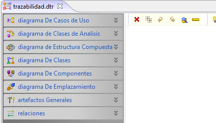
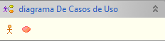
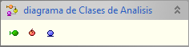
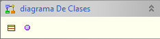
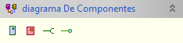
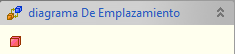
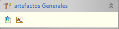
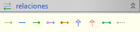

Plugin Trazabilidad
El plugin de trazabilidad permite reunir los artefactos de un gran
número de diagramas de UML, a pesar que el diagrama no está basado directamente sobre el estándar, permite una gran versatilidad al momento de extender las funcionalidades provistas por UML.
El diagrama de trazabilidad a diferencia de los otros diagramas en Coloso posee una barra lateral que contiene los elementos del diagrama, referenciado por el diagrama original al cual pertenecen.
El diagrama de trazabilidad posee elementos de:
El diagrama de trazabilidad a diferencia de los otros diagramas en Coloso posee una barra lateral que contiene los elementos del diagrama, referenciado por el diagrama original al cual pertenecen.

Figura 1. Diagramas que contribuyen al plugin de trazablidad
El diagrama de trazabilidad posee elementos de:
- Diagrama de Casos de Uso: El diagrama de trazabilidad permite usar los elementos actor y caso de uso del diagrama original.

Figura 2. Elementos del diagrama de casos de uso
- Diagrama de Clases de Análisis: El diagrama de trazabilidad permite utilizar los elementos clase control, clase límite y clase entidad del diagrama original.

Figura 3. Elementos del diagrama de clases de análisis
- Diagrama de Estructura Compuesta: El diagrama de trazabilidad permite utilizar los elementos colaboración y objeto del diagrama original.

Figura 4. Elemento del diagrama de estructura compuesta
- Diagrama de Clases: El diagrama de trazabilidad permite utilizar los elementos de clase e interfaz del diagrama original.

Figura 5. Elemento del diagrama de clases
- Diagrama de Componentes: El diagrama de trazabilidad permite utilizar los elementos de artefacto, componente, interface requerida e interface proveída del diagrama original.

Figura 6. Elemento del diagrama de componentes
- Diagrama de Emplazamiento: El diagrama de trazabilidad permite utilizar el elemento de nodo del diagrama original.

Figura 7. Elemento del diagrama de emplazamiento
- Artefactos Generales: Esta pestaña muestra elementos comunes a diagramas de UML (aunque generalmente se encuentran en la barra específica del marco). Esto elementos son la nota y el texto.

Figura 8. Elemento generales
- Relaciones: Esta
pestaña contiene las relaciones utilizados a lo largo de diferentes
diagramas de UML. Estas son la dependencia, asociación,
asociación unidireccional, agregación, composición, generalización,
realización, el enlace a puerto y el enlace.

Figura 10. Colección de todas la relaciones